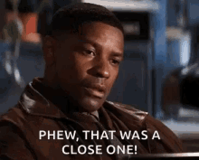

Projections lied to some of you. Let's see who.
Sorted by how far each team landed above or below its own projection.
| Team | Manager | Proj | Actual | Diff | Grade | Res |
|---|---|---|---|---|---|---|
| Hellen Keller's Dodgeball Squad | Ryan Guest | 219.7 | 241.0 | +21.3 | A+ | W |
| Waddle On Deez Nuts | Lucas McMahon | 223.1 | 239.75 | +16.7 | A | W |
| Donuts All Day 24/7 | Alby | 176.2 | 191.05 | +14.9 | A- | L |
| Kenz VishusLicks | Ken Glover | 229.1 | 222.25 | -6.9 | B+ | L |
| Catchy Football Name | McCarty | 267.0 | 252.6 | -14.4 | B | W |
| Texas Determined Domination | Kolby Gilseth | 216.0 | 200.4 | -15.6 | B- | L |
| MaHOMELANDER | Kevin Guest | 270.0 | 252.05 | -17.9 | C+ | L |
| Covfefe is for Closers | David Pannell | 265.3 | 240.05 | -25.2 | C | W |
| Nabers ate my Zombies | JJ | 242.3 | 214.15 | -28.2 | D+ | L |
| Hurt Me Moore | Joydip Joy | 254.9 | 194.4 | -60.5 | F | W |
Grade reflects performance vs. this team's own projection, not raw score — beating a low projection can outgrade a loss, and blowing a big one while still winning can still land an F.
Note: no optimizers were spent this week, so every actual total is the sum of its starters' points. Alby's A- came with a loss and Joydip's F came with a win.
Ryan scored 241.0 on a 219.7 projection with Trevor Lawrence on a bye and Jayden Daniels dropped. Tanner McKee, a $1 claim on Monday, scored 26.6 at QB, Zay Flowers scored 34.95 at OP on a 19.83 projection, Ollie Gordon II scored 28.8, D'Andre Swift scored 28.0, Tre Tucker scored 27.3 on a 13.3 projection, and the Bengals D/ST scored 26.0. He beat JJ by 26.85, and he's 5-2 with four straight wins.
Joydip won by 3.35 and still gets the F, because he missed his own projection by 60.49, the biggest miss in the league. Nico Collins scored 3.85 on a 20.72 projection, Jalen Coker scored 2.9 on 19.51, Bryce Young scored 18.1 on 37.44, and Chuba Hubbard scored 15.0 on 23.2. His bench scored 101.45, with Emanuel Wilson at 27.25, Omar Cooper Jr. at 26.25, and the Packers D/ST at 23.0. The win is on Alby, who started the 49ers D/ST (4.5) with the Cowboys D/ST (17.5) on his bench.
